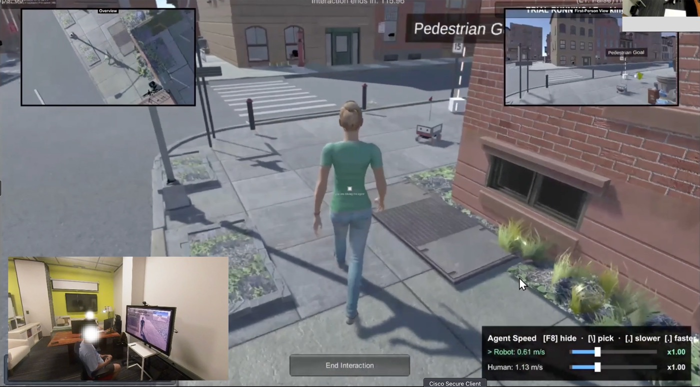
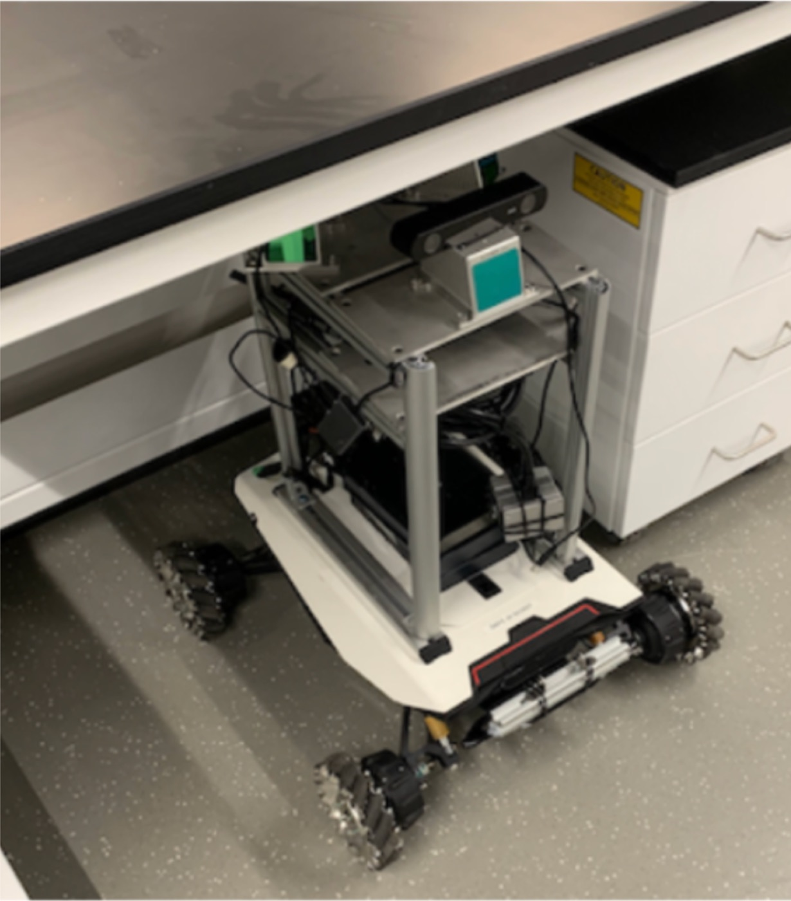
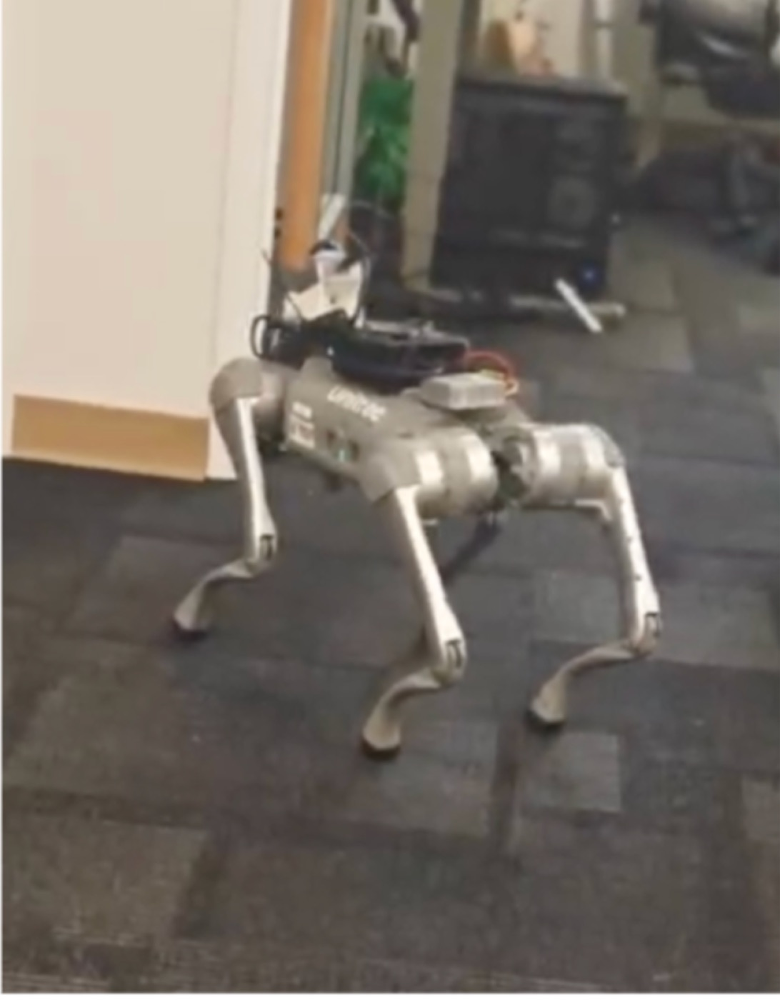
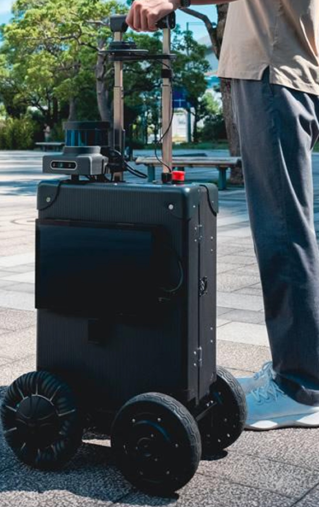

Robot capabilities for public space
How can robot foundation models and vision-language reasoning account for the norms and routines of specific places? Where do current benchmarks and metrics fall short of accessibility and bystander comfort?
A workshop at ACM CHI 2027, Pittsburgh
Preparing for a world where robots coexist with people
Delivery robots share our sidewalks, cleaning robots work through airport terminals, and service robots guide museum visitors. This workshop brings HCI, HRI, and robotics researchers together to ask what a public place and its people demand of a robot, and who gets a say.
Proposal submitted to CHI 2027. Workshop decisions are announced on November 19, 2026.
Public robots are usually evaluated on task performance. Socially appropriate behavior is harder to pin down: it varies with what people are doing, with unspoken norms, and with local rules, across places and across people. Social navigation research has built strong technical foundations, and HCI and HRI researchers have studied how people perceive and negotiate space with robots in real deployments. These lines of work have mostly grown in parallel.
Building on five editions of the Social Robot Navigation workshop series at ICRA, IROS, and RSS, we bring CHI's strengths in field methods, participatory design, and critical inquiry into dialogue with robotics. Together we aim to
How can robot foundation models and vision-language reasoning account for the norms and routines of specific places? Where do current benchmarks and metrics fall short of accessibility and bystander comfort?
Who gets a say in designing robots that operate in public space, and whose needs are left out? How can people of different ages, abilities, and backgrounds take part?
What can robots do on sidewalks, in transit hubs, and in museums beyond delivery and cleaning? How can they support, rather than displace, the people who already sustain these spaces?
How can field deployments, video analysis, longitudinal studies, and simulation be combined? How do we work with unpredictable crowds, safety and liability, and consent from bystanders?
We invite 2 to 4 page position papers on robots in public space. New ideas, work in progress, deployment experiences, and critical perspectives on methods and metrics are all welcome. Previously published or under-review work is also welcome with a short statement of its relevance.
Use the ACM double-column template. Submissions are not anonymized. Selected papers are presented as lightning talks, and all accepted papers are posted on this website as non-archival contributions. At least one author of each accepted paper must attend in person.
We welcome researchers, designers, practitioners, city and transit staff, and disability advocates. We expect 20 to 30 participants.
Two 90-minute sessions with a break, in person. The first session sets out perspectives on public space. The second puts participants in front of a simulator and real robots.
| 10 min | Welcome, goals, and introductions |
|---|---|
| 25 min | Keynote by Wendy Ju, Cornell Tech |
| 30 min | Lightning talks from up to seven papers |
| 25 min | Keynote by Stuart Reeves, University of Nottingham |
| 30 min | Simulated and physical robot encounters in small groups |
|---|---|
| 35 min | Group discussion, from encounters to metrics and methods |
| 25 min | Closing synthesis and next steps |
Cornell Tech
Wizard-of-Oz teleoperation of public robots, and assessing public space for robot traversability.
University of Nottingham
How people encounter autonomous delivery robots on public streets.
Participants set up scenarios such as a narrow corridor or a crossing flow of pedestrians in the simulator, then walk the same scenario with a physical robot, taking turns as pedestrians and observers. Robots run at walking speed in a marked-off area with operators and an emergency stop.



